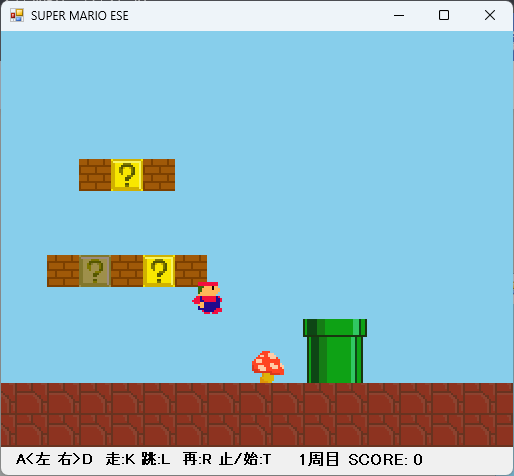

ダウンロード
インストールせずに実行できます。
インストールせずに実行できます。
A … 左移動
D … 右移動
K … ダッシュ
L … ジャンプ
R … リセット
T … 一時停止
周回するとスクロール・ダッシュ・敵やアイテムの移動速度がアップし、一部の敵の出現が増加します。
キノコをとると大きくなり、ダメージを受けると小さく戻ります。
穴に落下するか、小さい状態で敵に当たるか、小さい状態でスクロールと障害物に挟まれると周回の最初に戻されます。
タイトル画面なし、残機無限、音なし
開発は１週間。ドット絵を描くところから、マップ作成の効率化、画面スクロール、ジャンプアクション、敵踏みなど、自分で考えて実装しています。
